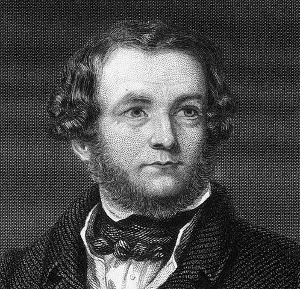

Método de Simpson 3/8
Integración numérica mediante interpolación cúbica

THOMAS SIMPSON (1710–1761)
Matemático británico autodidacta. Publicó en 1743 sus Ensayos matemáticos, donde expuso las reglas de integración numérica que hoy llevan su nombre.
El método de Simpson 3/8 aproxima una integral definida dividiendo el intervalo en múltiplos de 3 subintervalos y usando interpolación polinómica cúbica para estimar el área bajo la curva.